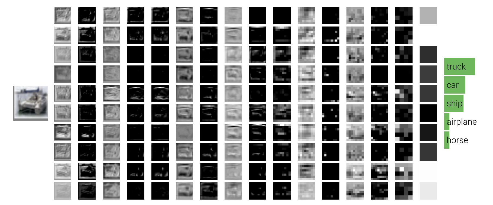
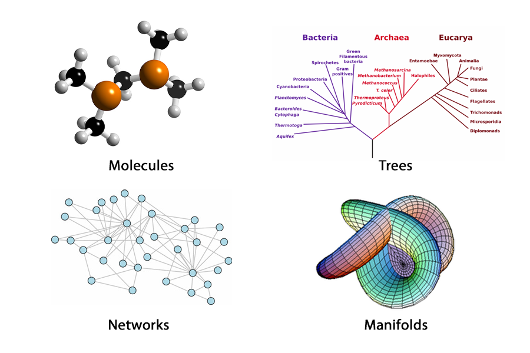
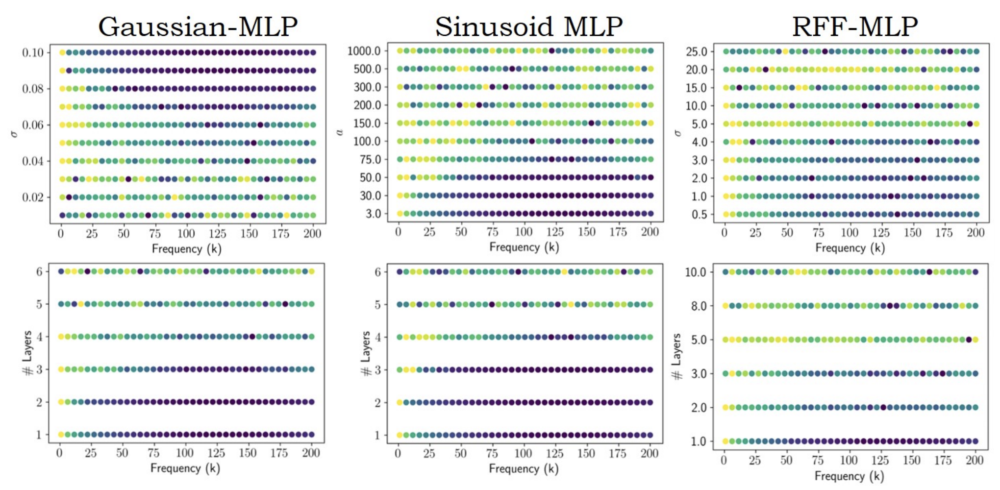

|
I am a final-year Ph.D. candidate in EECS at MIT CSAIL, advised by Prof. Antonio Torralba. My Ph.D. research focuses on generative foundation models for multimodal perception and interactive world understanding. I enjoy principled development towards:
Recognizing the difficulty for Academic ML research, I started an Open Research Seeds effort to help junior students. Before coming to MIT, I worked with Prof. Leonidas Guibas and Prof. Gordon Wetzstein at Stanford. Email: yichenl [at] mit [dot] edu |
Photo credit: Jiayuan Mao |
|
|
The Open Research Seeds effort is to offer some delibrately unconventional research ideas to help junior students to start in resource scarse academia. |
|
A geometric lens on attention and controlled architecture experiments, including key-normalized variants and random/shuffled controls. Explores sample-efficient evolutionary strategies for language-model post-training through low-rank parameter updates and quantization-aware variants. Studies rollout-efficient reinforcement learning for autoregressive video generation by densifying reward feedback over shorter generated blocks. |
|
|


{kind=link}
|
NVIDIA Research — Summer 2024
Built a unified physics simulation framework for soft, articulated, and rigid body dynamics. Designed anisotropic Young's modulus learning across physics regimes. 51% error reduction over team baseline.
Adobe Research — Summer 2025
Built RL post-training systems for video diffusion models including zeroth-order evolutionary optimization and dense per-frame reward methods.
NVIDIA Research — Summer 2023
Built a Gaussian kernel-based architecture for fast point cloud processing as a PointNet replacement.
Adobe Research — Summer 2021
Built a video layer decomposition system using source separation methods.
NVIDIA Research — Summer 2020
Built a point cloud completion system utilizing raycasting-based data generation. US Patent filed. |
|
Workshop Organizer: CVPR 2026 Multimodal Learning, Sense of Space, RSS 2025: Multimodal & MultiSensory Robotics, ECCV 2024: Geometry in the Large Model Era
Conference Reviewer: CVPR, ICCV, ECCV, ICML, ICLR, NeurIPS, ACM SIGGRAPH Journal Reviewer: ACM TOG, IEEE-TPAMI |
|
|
 |
CS231N: Convolutional Neural Networks for Visual Recognition (Spring 2021)
Course Assistant (CA) |
 |
CS468: Geometric Algorithms: Non-Euclidean Methods (Fall 2020)
Course Assistant (CA) |
 |
6.S898: Deep Learning (Fall 2023)
Course Assistant (CA) |
|